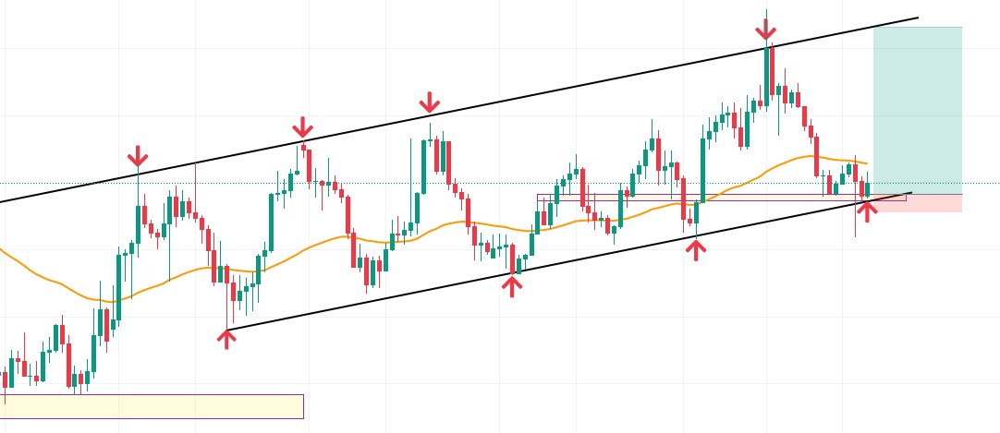

- Figures chartistes : Canal Haussier / Baisssier -
Validité :
Chacune de ces droites doit avoir été touchées au minimum 2 fois pour valider la figure.
NB : une ligne est dite "valide" si le cours la touche au moins 3 fois en support ou en résistance.

Il n'y a pas d'objectif de cours théorique sur cette figure chartistes. Le mouvement peut se poursuivre tant que la ligne de support du canal haussier ou que la ligne de résistance du canal baissier n'est pas cassée.
Si vous souhaitez éviter au maximum les fausses cassures (fausses sorties de canal), il est conseillé de tracer les droites de tendances (lignes de résistance et de support) en fonction des points bas et points hauts (mèches) des chandeliers et non des corps de chandelier.
- Dans un canal haussier, il est déconseillé de prendre une position short (à la vente) au contact de la borne haute (ligne de résistance du canal). La tendance en cours étant haussière, le seul objectif serait de viser un retour sur la borne basse (ligne de support du canal), mais généralement sans grandes perspectives de performances. Privilégiez les positions Longues (à l'achat) après rebond sur la ligne de support du canal haussier.
- Dans un canal baissier, il est déconseillé de prendre une position longue (à l'achat) au contact de la borne basse (ligne de support du canal). La tendance en cours étant baissière, le seul objectif serait de viser un retour sur la borne haute (ligne de résistance du canal), mais généralement sans grandes perspectives de performances. Privilégiez les positions Short (à la vente) lorsque le cours replonge après avoir buté sur la ligne de résistance du canal baissier.
- Les statistiques nous montrent que la sortie du canal haussier s'effectue la plus grande partie du temps au 4ème contact avec la ligne de support. Cependant, le pourcentage statistique de sortie au 4ème contact est faible. Il n'est donc pas conseillé de viser une sortie de canal haussier dès lors que le cours s'apprête à tester la ligne de support pour la 4ème fois.
- Les statistiques nous montrent que la sortie du canal baissier s'effectue la plus grande partie du temps au 4ème contact avec la ligne de résistance. Cependant, le pourcentage statistique de sortie au 4ème contact est faible. Il n'est donc pas conseillé de viser une sortie de canal baissier dès lors que le cours s'apprête à tester la ligne de résistance pour la 4ème fois.
- On remarque que plus la ligne de support a été souvent testée et a permis au cours de rebondir, plus la cassure de la ligne de support / sortie de canal haussier est violente.
- On remarque que plus la ligne de résistance a été souvent testée et a permis au cours de replonger, plus la cassure de la ligne de résistance / sortie de canal baissier est violente.
- Lorsque le cours a validé une sortie de canal, il est très fréquent que le cours effectue un pullback. Voir même, que le cours poursuive son évolution formant généralement au final un canal plus large.